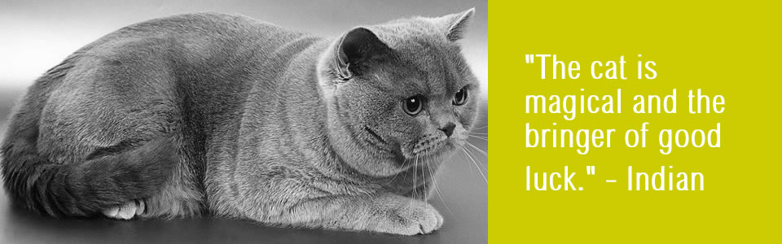
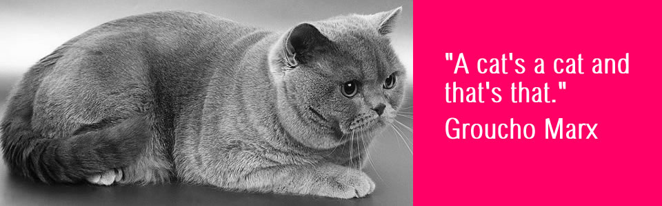
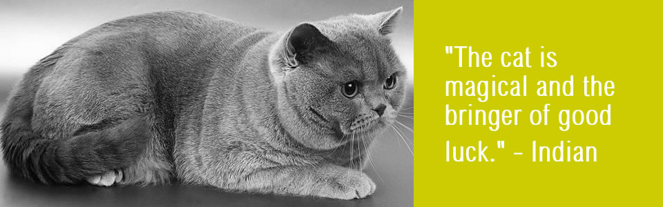
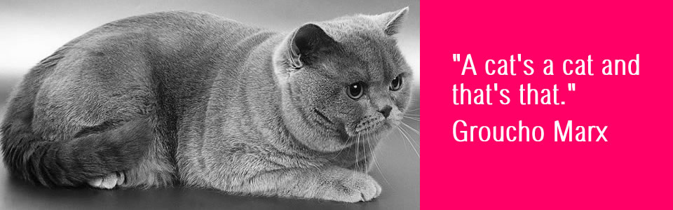

Welcome
I am watching...

Kucing tidak suka jika ada perubahan tanpa persetujuan mereka. Kucing bisa bekerja sama ketika sesuatu terasa menyenangkan, yang, menurut kucing, seharusnya terasa menyenangkan sebanyak mungkin. Kucing adalah makhluk dengan indera dan perasaan yang halus secara alami.
I am thinking...
Ada orang yang merubah dunia dengan kekuatan atau argumen, tetapi kucing hanya berbaring di sana, tidur; dan dunia dengan tenang merubah dirinya untuk menyenangkan kenyamanan dan kemudahan kucing tersebut.
I am resting...

Hal tentang kucing, Seperti yang mungkin Anda temukan, Adalah bahwa tak ada yang tahu Apa yang ada dalam pikiran mereka.
And purr sleeping..

Kucing selalu dikaitkan dengan Bulan. Seperti Bulan, mereka hidup pada malam hari, melarikan diri dari kehadiran manusia dan berkeliaran di atas atap rumah dengan mata bersinar melalui kegelapan.